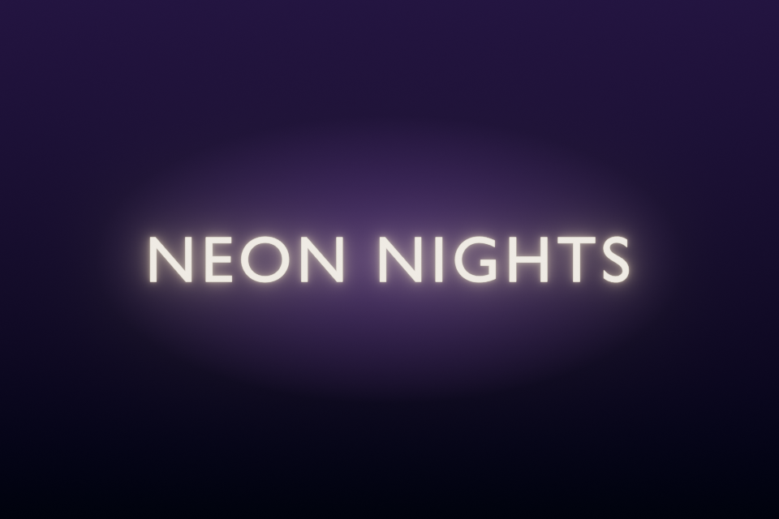
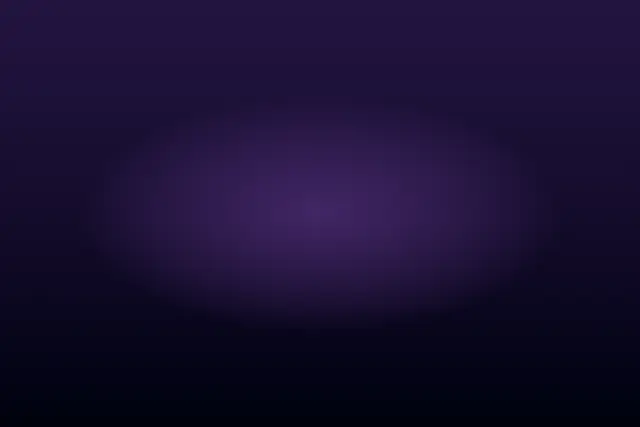

Products › BaseNode Packs › Motion Design 2D › Tutorial: A title sequence
A title sequence
Four seconds of broadcast title: the letters of a name fall into place in a random order and throw sparks, a line draws out under them, a tagline is typed on, a comet sweeps past with its echoes and its trail, and everything leaves again.
The kind of thing you would make in After Effects with text animators, Particular and Echo, made here in Geometry Nodes, in one .bn file that grows a few lines at each step.

You will learn
- The craft. How a motion designer builds a title: a range selector that brings the letters in one after the other, animators that move, turn, scale and fade each one about its own centre, a typewriter, particles born on the letters, and a moving element given weight by its echoes and its trail; then the timing that ties them together, in and out.
- The language. Time in a graph:
SceneTime().frameturned into a progress from 0 to 1 by aClamp, one per part; small graphs that each take a progress; the same field (a letter's opacity) read by the material and by the particles; simulation zones you never write, because the modules hold them.
This page goes faster on the basics than Lunar ground, which explains a graph, a pipe (|>), a material and the way a step file is read. Read it first if those are new to you.
Before you start
You need three things:
- Blender 5.
- The Base Node add-on, version 0.13.1 or later.
- The Motion Design 2D pack, sold by the author of Base Node apart from the open source project. It carries the three modules this tutorial uses. The steps on this page are free to read, copy and change; the modules they call are not.
| Module | After | What it gives |
|---|---|---|
text_animate | After Effects' text animators and range selectors | A text as one instance per letter (text_characters), a selector that reveals it by letter, word or line, forward, backward or at random (text_reveal), animate_characters about each letter's centre, typewriter, text_on_path. |
particles2d | Fusion's particles, After Effects' Particular | Emitters (a point, a line, a circle, any shape or the outline of a text), particles_2d with speed, spread, gravity, drag and turbulence, sprites and dots that fade and grow over their life. |
echoes | After Effects' Echo, Fusion's Trails | echoes: copies of a moving element as it was a few frames before, fading and tinted; motion_trail: a curve through where it went, thinning to its tail. |
Every block below is a complete .bn file, its code beside the nodes it builds. It opens on the graph the step adds or changes; the others are in the menu at the top of the block. Two ways to try a step:
- Drag it. Drag the file icon of its block, or its title, onto empty space in Blender's 3D Viewport, and keep Instantiate the Example: a new object carries
title_sequenceat the 3D cursor. A click on the file icon downloads the file instead. - Paste it. Press the copy button of its block, open a Geometry Node editor, press Ctrl+Shift+V and pick Add as Modifier, on any mesh object: the graph writes its own title and ignores the mesh it is given.
Look at it from above (Numpad 7), in Material Preview, and play it from the first frame (Shift+Left, then Space): from step 5 on, the sparks and the comet are simulations, and a simulation only knows a frame it has played its way to.
The animations are rendered from these exact files by render.py, which adds a dark gradient card behind the title, an orthographic camera straight above it, and a bloom in the compositor. They are rendered with EEVEE, the 96 frames of the sequence one after the other.
A letter is an instance
Everything in this tutorial rests on one choice of text_animate: a text is not one mesh but one instance per letter, each knowing its index, its word, its line and its centre.
An instance can be moved, turned and scaled on its own, cheaply, before any letter is filled. So the work of a step is always the same: compute, for each letter, a number from 0 to 1 that says how far along it is, then let an animator turn that number into a move.
Only at the end does text_mesh fill the letters into a mesh for the render.
1. A title, one instance per letter
text_characters writes the title with Blender's String to Curves, a curve instance for each letter, from the origin on its baseline. centred moves it so that its middle is at the origin, and text_mesh fills it.
step1_title.bn: title_sequence, centred, Title
use text_animate (…)brings in the groups this file calls, by name.use_radius: falsematters: the letters are curves, of radius 1 by default, and aBoundingBoxthat counted the radius would be a metre too wide on every side.Titleis anEmission, not a lit surface: on a title card, letters give light rather than take it, and the bloom of the compositor finds them by their brightness.

2. Revealed letter by letter
Time comes in. SceneTime().frame is the frame being played; Clamp((frame - 6) / 36) makes it a progress that stays at 0 until frame 6, runs to 1 by frame 42 and stays there. Every animated part of this tutorial is driven this way, by a progress of its own.
step2_reveal.bn: title_sequence, Title
- The selector.
text_revealis After Effects' range selector: a number on each letter, 0 while it is not shown yet, 1 once it is. Asprogressgoes from 0 to 1, it goes over the letters one after the other,by: Character,order: Forward. - The softness.
softness: 3.0makes each letter take the time of three letters to come in, so that three are always on their way: a soft wave across the word instead of letters that blink on. - The animator.
animate_charactersapplies its changes byamount: 1 gives a letter all of them, 0 none. A letter not shown yet must have all of them, soamount: 1.0 - shown. Here the only change isopacity: 0.0, and no offset. - The material. The animator stores
opacityon each letter, andtext_meshpasses it to the points of the mesh.Titlenow reads it with anAttributenode and mixes the light with aTransparentBSDF.

3. Letters that fall into place
The same selector and the same animator, with more in it: each letter now comes from 90 cm above, turned by 40°, three times its size and transparent, and lands at rest. And the letters come in a random order.
step3_animators.bn: title_sequence
- About its centre. A letter turns and scales about its own middle, the
pivotthattext_charactersstored, not about the origin of the title: that is what makes a letter spin in place instead of swinging around the word. order: Randomshuffles the letters by aseed. Change the seed for another order; the order is the same at every playback, on every machine.- Why the letters land, not leave. The animator describes where a letter comes from: at
amount0 it is at rest. That is After Effects' way, and it means the title is always readable at the end, whatever you put in the animator. - Try
by: Word: the two words come in one after the other, each letter of a word with its word.
4. A tagline, typed on
A second line, small, widely spaced, in cyan, typed on under the title once it has landed, with a cursor that blinks after the last letter. The file now splits its work into small graphs, each with its own progress: title and tagline.
step4_typed.bn: tagline, title_sequence, title
typewriterkeeps the first letters only, as many asprogresssays, and removes the others: no fade, a letter is there or not, as typed.- The cursor stands after the box of the letters typed so far, or at the start of the line before the first one (
some). It is shown while the line types, then blinks twice a second:mod(frame, 12) < 7. - Overlapping times. The title runs from frame 6 to 36 and the tagline from 34 to 64: the line starts before the title has quite finished. Parts that wait for each other look mechanical; a little overlap makes a sequence.
5. Sparks off the letters
Particles, born on the outline of the letters as they land. title now returns the letters still as instances, so that two things can read them: text_mesh for the render, and sparks for the particles.
step5_sparks.bn: sparks, title_sequence, title, Spark
- The emitter.
landedkeeps the letters more than half shown, read from theopacitythe animator stored;shape_emittermakes their outline a curve to be born on. So a letter starts to spark when it lands, not before, and the sparks follow the reveal with no time of their own. - The simulation.
particles_2dgives each spark a speed (speed, up to 70 % less at random), towarddirection, up by default, in a fanspreadwide, 90° here. Every frame,gravitypulls it (up here: a light spark rises like an ember),dragslows it,turbulencestirs it with a noise that flows. It dies afterlife. - The sprites.
particle_sprites_2dputs a small disc on each spark, stretched along its speed (stretch) so that the fast ones streak, shrinking tosize_endof its size and fading over the last 60 % of its life. It storesopacityandlife_factoron each one. - The colour.
Sparkreads them from the instancer: gold at its birth, magenta at its death. A spark that changes colour as it dies reads as hot.
The simulation zone is inside particles_2d: it starts at the first frame of the scene, which is why you play the sequence from there.
6. A comet, its echoes and its trail
A moving element to cross the frame: a bright disc that sweeps in from the left under the title and out at the top right. Alone, a small disc moving fast is hard to follow; its past makes it read as motion.
step6_comet.bn: comet, title_sequence, Comet, Trail
- The path. A
BezierSegment, from out of the frame to out of the frame.SampleCurvegives the point at a factor of its length, andprogress * progress * (3 - 2 * progress)eases it: the comet leaves slowly, rushes, and slows down. echoeskeeps the disc as it was over the last frames and shows six copies, every two frames: each one 70 % as opaque as the one before, and tinted from white toward cyan. The echoes of a mesh come out as a mesh, the opacity and tint on its points:Cometreads them there, not from the instancer as the sparks do.motion_traildraws a curve through where the comet's centre went over the last 14 frames, its radius thinning from 9 cm to nothing at the tail;CurveToMeshgives it a body andTrailfades it bytrail_factor.- Both hold their own simulation zone. Neither knows anything about the path: they would echo and trail anything that moves, a letter or a spark.
7. The whole sequence, in and out
The last step is timing. A line draws out under the title, the sequence holds, then everything leaves in turn and the card is empty again at frame 96, where it started: the sequence loops.
step7_final.bn: title_sequence, title, rule, ease
- Two animators in a row.
titletakes a second progress,out, and a secondanimate_charactersafter the first: byWord,Forward, each word grows to 1.8 times its size and fades. The opacities multiply, so a letter can be on its way in and out at once. - Typed off. The tagline's progress is a progress in minus a progress out: it climbs to 1 and comes back to 0, and the typewriter erases the line from its end, the cursor ahead.
- The line.
ruleis a thinGridwhose width is a progress too, eased in and out byease, which the comet now uses as well. - The timeline. All the times are in
title_sequence, one line each: to slow the sequence down or move a part, you change a number there, not inside the parts.
The knobs
Every module group has its inputs, on its node in the Geometry Node editor. A few to start with:
| Where | Input | What it does |
|---|---|---|
text_reveal | by, order, seed | Letter, word or line; forward, backward or at random, shuffled by the seed. |
text_reveal | softness | How many letters are on their way at once; 0 for letters that switch on. |
animate_characters | offset, rotation, scale, opacity | Where a letter comes from, how turned, how big, how transparent, about its centre. |
particles_2d | rate, speed, spread, life | How many sparks a second, how fast, how wide a fan, how long they live. |
particles_2d | gravity, drag, turbulence | The pull (a vector: up, down or sideways), the slowing down, the stirring. |
particle_sprites_2d | size, size_end, stretch | The size at birth, the size at death as a factor of it, the streak along the speed. |
echoes | count, every, decay, tint | How many echoes, how many frames apart, how fast they fade, toward what colour. |
motion_trail | frames, radius | How long the trail is, in frames, and how thick at its head. |
Try: on step 7, set the title's order to Backward and by to Word. Set the sparks' gravity to (0.0, -2.0, 0.0): they fall like molten metal. Set every of echoes to 1 and count to 12: the beads become a smear.
To use your own title, change the two texts: centred keeps them in the middle, whatever their length. For a longer title, give text_characters a width: it wraps by words into lines, and by: Line brings them in one line at a time.
Take it to Blender
The whole sequence, in one file. Drag the card onto empty space in Blender's 3D Viewport and keep Instantiate the Example: a new object carries title_sequence. Then play it from the first frame. A click on the card downloads the file.
The steps before it, to start again from any of them:
The files, with the script that renders this page's animations, are in examples/tutorials/title_sequence/.